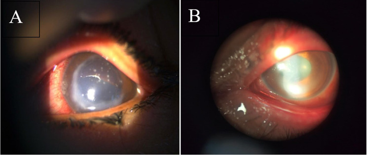
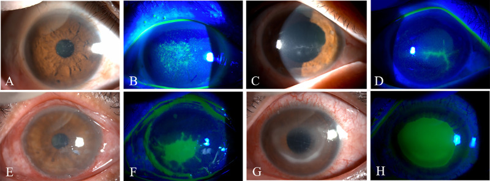
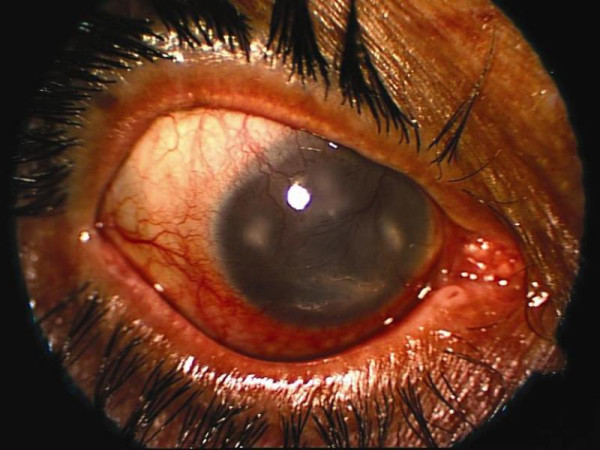
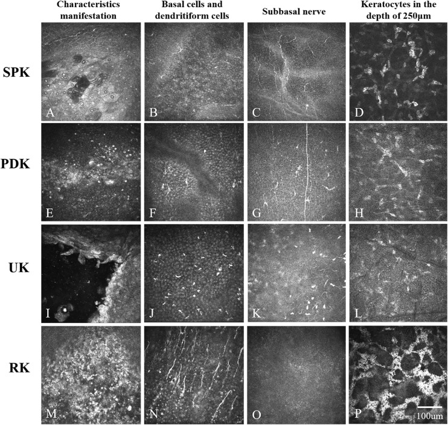
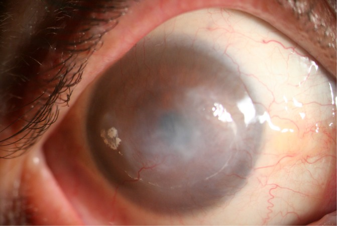

3205 — Loét giác mạc do lạm dụng thuốc tê & độc tính chất bảo quản (BAK) / Topical anesthetic abuse keratopathy & benzalkonium chloride toxicity
Tags: pattern:loet-doc-chat pattern:tham-nhien-hinh-vong pattern:khuyet-bieu-mo-dai-dang pattern:mat-cam-giac-giac-mac pattern:tan-chay-giac-mac pattern:do-mo-giac-mac vung:mat vung:giac-mac vung:bieu-mo-giac-mac protocol:den-khe protocol:AS-OCT protocol:IVCM protocol:esthesiometry protocol:nhuom-fluorescein protocol:sieu-am-B anatomy:than-kinh-giac-mac
Mức chắc chắn (certainty): tổng hợp y văn (literature synthesis) — nhóm tự biên, không có bệnh nhân của mình. Số liệu chính: 13 bệnh nhân/14 mắt lạm dụng thuốc tê tại Shiraz, Iran (J Occup Med Toxicol 2025, PMC12801944); 54 mắt độc tính giác mạc + 20 mắt chứng, IVCM (Transl Vis Sci Technol 2021, PMC8431974); ca 65 tuổi hai mắt, màng ối không chỉ (J Med Case Rep 2010, PMC2924861); ca 42 tuổi loét kiểu Mooren hai mắt (Clin Ophthalmol 2012, PMC3484722); tổng quan Cochrane 9 thử nghiệm/556 người về thuốc tê ngoại trú (Commun Med 2025, PMC12460648); thí nghiệm tế bào biểu mô giác mạc người với BAK 0,00002–0,02% (Transl Vis Sci Technol 2025, PMC12629134); chuột BAK 0,01% × 2 lần/ngày × 3 tuần (Transl Vis Sci Technol 2024, PMC11498636); tổng quan bệnh bề mặt nhãn cầu ở bệnh nhân glôcôm châu Á (Clin Ophthalmol 2026, PMC13593577). Ảnh: PMC12801944, PMC8431974, PMC2924861, PMC3484722.
Câu chốt: đau nhiều mà mắt đỏ ít, khuyết biểu mô không lành dù đã "điều trị đủ", và thâm nhiễm nhu mô hình vòng — bộ ba này không phải "viêm giác mạc nặng" mà là thuốc đang phá giác mạc. Cùng một nguyên lý với bài 3204 nhưng ngược chiều triệu chứng: loét thần kinh không đau, loét do thuốc tê đau dữ dội (vì thần kinh còn, chỉ bị kích thích) — và mỗi lần nhỏ thêm để "đỡ đau" là thêm một lần tự hủy nhu mô. Câu hỏi của mọi ca: (1) trong toa có thuốc tê hay chất bảo quản BAK không? (2) cảm giác còn hay mất? (3) nhu mô còn bao nhiêu µm trên AS-OCT?
1. Tổng quan bệnh học – cơ chế hình ảnh (TẠI SAO)
1.1 Ngưỡng định lượng (số phải nhớ)
- Thuốc tê nhỏ mắt thường dùng: tetracaine 0,5%, proparacaine 0,5%, oxybuprocaine 0,4% (PMC12801944). Trong loạt 14 mắt, 100% dùng tetracaine 0,5%, 100% mua tại nhà thuốc không có đơn, thời gian lạm dụng trung vị 8,5 ngày (IQR 2) — nghĩa là chỉ hơn một tuần đủ gây tổn thương nhu mô.
- Nhân khẩu – nghề nghiệp: 13 bệnh nhân/14 mắt, tuổi trung bình 43,15 ± 7,14 (32–56), 92,3% nam; hàn 38,5%, mài kim loại 23,1%, xây dựng 15,4%, thợ ống nước 15,4%; chấn thương mắt chiếm 3–4% tổng chấn thương lao động (PMC12801944). Đây là bệnh nghề nghiệp trước khi là bệnh giác mạc.
- Hình thái lúc vào: 100% có thâm nhiễm nhu mô hình vòng (ring stromal infiltration); cấy dương 7/14 mắt (~50%) — S. aureus 3, S. epidermidis 3, S. pneumoniae 1 (bài ghi "cấy âm 7 ca = 53,8%" ở mức bệnh nhân) (PMC12801944).
- Hậu quả: 4/13 nhập viện (30,8%); 1 thủng giác mạc (7,7%) ở bệnh nhân có tiền sử tiêm chích ma túy, kém tuân thủ. Thị lực trung vị 0,61 → 0,154 logMAR sau 3 tháng (p < 0,001); tỷ lệ mắt ≥ 5/10 tăng từ 2/14 lên 12/14 (PMC12801944) — tức ngừng thuốc là điều trị hiệu quả nhất, nhưng không phải ca nào cũng hồi phục.
- Bốn kiểu hình độc tính giác mạc (54 mắt, phân theo đèn khe): chấm nông (SPK) 10 mắt, giả đuôi gai (pseudodendritic) 14, loét (ulcerative) 16, hình vòng (ring) 14; chứng 20 mắt (PMC8431974). Đây là phân loại mô tả, không phải thang phân độ đã xác nhận.
- IVCM — vì sao "đèn khe trông nhẹ mà bệnh nặng": so với chứng, mắt độc tính có mật độ tế bào hình gai (dendritiform cell) 45,8 (25,0–100,0) vs 24,0 (20,8–32,3) tế bào/mm² (p = 0,013), kích thước tế bào gai 111,0 (92,0–137,8) vs 63,7 (47,7–70,3) µm² (p < 0,001), độ xoắn sợi thần kinh 0,08 (0,05–0,09) vs 0,04 (0,02–0,04) (p < 0,001); mật độ tế bào đáy và chiều dài sợi thần kinh giảm (p < 0,001); chiều dài sợi thần kinh có AUC 0,992 ± 0,008 — mạnh hơn mọi thông số khác (PMC8431974).
- Nhuộm fluorescein KHÔNG tương quan với IVCM (mọi p > 0,05) — mắt "chỉ trợt nhẹ" vẫn có thể mất sợi thần kinh + viêm tế bào gai lan rộng (PMC8431974). Ngược lại, mức tăng tế bào gai tương quan thuận với thời gian và tần suất nhỏ thuốc (r = 0,361 và 0,581; p < 0,05) — liều tích lũy mới là biến số, không phải "loại thuốc".
- BAK (benzalkonium chloride) — ngưỡng trên tế bào biểu mô giác mạc người: CMC ≈ 0,01%; ≥ 0,02% làm giảm > 40% trở kháng điện trong 1 giờ (phá màng tức thì); 0,00025% vẫn giảm 37% sau 72 giờ, 0,0001% giảm 26%, ≤ 0,00005% không đáng kể; ≥ 0,00005% đã giảm hô hấp đáy và ATP của ty thể, ≥ 0,0001% giảm hô hấp tối đa (PMC12629134). Nghĩa là độc tính dưới CMC vẫn tích lũy qua ty thể — không có "ngưỡng an toàn tuyệt đối".
- Chuột: BAK 0,01% × 2 lần/ngày × 3 tuần sau khi bào mòn biểu mô → chậm hồi phục hàng rào đến ngày 18 và giảm mật độ sợi thần kinh vùng thương tổn; sodium hyaluronate 0,4% cải thiện theo nồng độ (PMC11498636). Đây là bằng chứng cơ chế cho việc đổi sang công thức không chất bảo quản.
- Bệnh bề mặt nhãn cầu ở người dùng thuốc glôcôm: tỷ lệ 32,1–99,1% tùy nước và tùy tiêu chuẩn (triệu chứng hoặc dấu chứng) (Clin Ophthalmol 2026, PMC13593577) — không phải biến chứng hiếm, mà là bệnh nền của phần lớn bệnh nhân glôcôm dùng thuốc lâu dài.
- Thuốc tê ngoại trú KHÔNG có bằng chứng giảm đau: gộp 9 thử nghiệm (314 người trợt sau chấn thương + 242 sau mổ), không khác biệt giảm đau ở 24 giờ ở nhóm sau chấn thương; nguy cơ khuyết không lành tăng 37% (RR 1,37; KTC 95% 0,78–2,42; 3 thử nghiệm/221 người); chất lượng bằng chứng rất thấp, > 50% thử nghiệm nguy cơ sai lệch cao (Commun Med 2025, PMC12460648).
1.2 TẠI SAO thuốc tê phá giác mạc — bốn tầng tổn thương
- Tầng 1 — màng và bộ khung tế bào biểu mô: thuốc tê ổn định bất thường màng tế bào, phá actin cytoskeleton và tách phức hợp vinculin–actin → tế bào biểu mô mất khả năng di chuyển và bám dù còn sống. Vì vậy khuyết biểu mô không lành dù bề mặt ẩm: đây là lỗi cơ học của tế bào, không phải "thiếu nước mắt" (PMC12801944).
- Tầng 2 — nhu mô (keratocyte): độc trực tiếp lên keratocyte → thâm nhiễm, phù, tan chảy nhu mô. Giả thuyết được nêu cho vòng thâm nhiễm: các antigen giải phóng từ phức hợp vinculin bị tách bị nhận diện miễn dịch → phản ứng hình vòng ở nhu mô, trong khi trung tâm lại trong (central clear zone) vì vùng đó đã mất biểu mô — không còn nguồn antigen (PMC12801944). Đây là lý do ring + trung tâm sáng là chân dung của thể nhu mô, không phải của nhiễm khuẩn.
- Tầng 3 — nội mô: độc nội mô gây đa dạng tế bào, hoại tử khu trú, mất tế bào và nối gian bào bất thường → phù nhu mô không hồi phục dù biểu mô đã lành (PMC12801944). Đây là cơ chế mờ giác mạc vĩnh viễn sau một đợt "chỉ loét nông".
- Tầng 4 — vòng xoắn thần kinh – cảm giác – đau: thuốc tê ức chế cảm giác → giảm phản xạ chớp, giảm tiết nước mắt, giảm dinh dưỡng thần kinh; đồng thời thần kinh bị kích thích gây đau không tương xứng. Bệnh nhân nhỏ thêm để đỡ đau → vòng xoắn tự hủy (vicious cycle) (PMC12801944). So sánh với bài 3204: cùng mất cảm giác, nhưng NK không đau vì đã mất nociceptor; ở đây đau vì nociceptor còn bị kích thích — dấu hiệu phân biệt trên lâm sàng, không phải trên hình.
- BAK — tầng thứ năm, chậm và âm thầm: BAK là chất hoạt động bề mặt cation, gắn vào phospholipid màng; ở ≥ CMC (~0,01%) phá màng trong 1 giờ, dưới CMC vẫn ức chế ty thể và làm chậm hồi phục hàng rào qua nhiều ngày (PMC12629134). Trên người, tổn thương biểu hiện chấm nông, khô, khó chịu tăng dần theo số lọ thuốc — và đây là biến số điều chỉnh được ngay (đổi sang công thức không chất bảo quản), khác với thuốc tê (phải ngừng hoàn toàn).
1.3 TẠI SAO ảnh trông như vậy (vật lý)
- Đèn khe + fluorescein 1–2% (kích thích ~490 nm, phát ~520 nm): fluorescein ưa nước, không thấm màng biểu mô lành; nơi mất biểu mô thuốc thấm vào nhu mô → vùng xanh rực. Vì vậy fluorescein chỉ đo "cửa mở", không đo "mức viêm" — đúng với phát hiện không tương quan với IVCM (PMC8431974). Bờ ổ trong thể độc chất thường nhợt, không cuộn dày như thể thần kinh (bài 3204) vì biểu mô quanh bị độc, không tăng sản.
- AS-OCT (~1.300 nm): đo bề dày biểu mô (trung tâm bình thường ~50 µm) và điểm nhu mô mỏng nhất (giác mạc trung tâm bình thường ~540 µm); khuyết biểu mô → mất lớp tăng phản xạ bề mặt; thâm nhiễm/phù → dày + tăng tán xạ; đáy loét xơ → phản xạ mạnh. Ngưỡng hành động: < 200 µm là nguy cơ thủng cao, xử trí như bài 3203.
- IVCM (laser 670 nm, ×800): thấy tế bào đáy, tế bào gai (dendritiform), sợi thần kinh dưới đáy, phản xạ keratocyte. Trong độc tính: tế bào gai to và nhiều, sợi thần kinh ngắn/xoắn, keratocyte phản xạ mạnh — dấu hiệu vi mô xuất hiện trước và nặng hơn dấu hiệu đại thể (PMC8431974).

Hai bệnh nhân trong loạt 14 mắt: (A) nam 48 tuổi — giác mạc mờ đục lan tỏa, vòng thâm nhiễm nhu mô và tân mạch, kết mạc viêm; (B) nam 47 tuổi — vòng thâm nhiễm trắng đục rõ ở nhu mô giữa, trung tâm tương đối trong, kết mạc cương tụ. Cả hai đều dùng tetracaine 0,5% tự mua; 100% mắt trong loạt có thâm nhiễm hình vòng. Nguồn: J Occup Med Toxicol 2025, Fig. 1, PMC12801944 — CC BY-NC-ND 4.0 (ảnh nguyên bản).2. Mẫu hình + chẩn đoán phân biệt theo vị trí (gamut)
2.1 Bốn kiểu hình trên đèn khe (dùng để mô tả, không phải để "chấm điểm")
- Chấm nông (SPK): nhiều chấm nhuộm rải rác, dưới nhiều hơn trên, giác mạc còn trong; bệnh nhân khó chịu, khô, nhìn hơi mờ; đây là giai đoạn duy nhất còn đảo ngược hoàn toàn bằng bỏ thuốc có BAK.
- Giả đuôi gai (pseudodendritic): đường cong, nhánh, bờ mềm, không có bóng tận cùng (terminal bulbs) như HSV; nhuộm fluorescein nhạt, không đau kiểu HSV, không có tăng cảm giác vùng da.
- Loét (ulcerative): khuyết biểu mô bờ nhợt, đáy sạch hoặc trắng, thâm nhiễm nhu mô quanh; không đáp ứng kháng sinh vì không có vi khuẩn (hoặc có bội nhiễm — cấy dương ~50%).
- Hình vòng (ring): vòng thâm nhiễm nhu mô ± trung tâm trong, ± mỏng nhu mô chu vi vòng, ± mủ tiền phòng; không phải đặc hiệu — nhưng kết hợp tiền sử nhỏ thuốc tê + không lành khi tiếp tục thuốc là chốt.

Bốn kiểu hình trên 54 mắt độc tính giác mạc (20 mắt chứng): hàng trên — (A, B) chấm nông: chấm nhuộm rải rác, giác mạc còn trong; (C, D) giả đuôi gai: đường cong mềm, không bóng tận cùng, nhuộm nhạt. Hàng dưới — (E, F) loét: khuyết biểu mô lớn, bờ nhợt, nhu mô quanh đục; (G, H) hình vòng: vòng nhuộm/thâm nhiễm với trung tâm sáng hơn. Ảnh B, D, F, H là ánh sáng cobalt sau fluorescein. Nguồn: Transl Vis Sci Technol 2021, Fig. 1, PMC8431974 — CC BY 4.0.
Ca nguyên văn 65 tuổi, nhân viên y tế, lạm dụng thuốc tê hai mắt: khuyết biểu mô trung tâm 3 × 1 mm + thâm nhiễm hình vòng ở nhu mô giữa (mắt phải). Đây là "đơn vị" tổn thương nhỏ nhất đủ để chẩn đoán: khuyết trung tâm + vòng nhu mô, không cần mủ tiền phòng. Mắt trái của cùng bệnh nhân, sau khi ghép màng ối không chỉ, có mủ tiền phòng rồi đe dọa thủng ở lần khám cuối — cho thấy ngừng thuốc muộn vẫn để lại hậu quả. Nguồn: J Med Case Rep 2010, Fig. 1, PMC2924861 — CC BY 2.0.2.2 Gamut theo vị trí — vị trí gợi ý tác nhân
- Trung tâm/cạnh trung tâm, đối xứng hai mắt: thuốc nhỏ dùng đều hai mắt (thuốc tê, glôcôm, nước mắt có BAK) — luôn hỏi toa thuốc của cả hai mắt; tổn thương đối xứng là dấu hiệu tác nhân toàn thân/tại chỗ dùng đều, không phải "chấn thương một bên".
- Dưới (1/3 dưới) + dải theo khe mi: thuốc nhỏ đọng ở túi kết mạc dưới + phơi nhiễm/hở mi — BAK và thuốc tê đều tích ở ngách dưới, nên SPK dưới là chân dung độc chất; nếu chỉ một bên thì nghĩ nhỏ thuốc một mắt hoặc liệt VII.
- Chu vi vòng/rìa (limbal): mỏng nhu mô 360° + bờ khoét = kiểu Mooren (đã ghi nhận ở anesthetic keratopathy, PMC3484722) — không được sinh thiết mù; cần loại trừ nhiễm trước khi ức chế miễn dịch.
- Một ổ khu trú + dị vật/tiền sử chấn thương nghề nghiệp: không được quy cho thuốc tê trước khi loại trừ dị vật nội nhãn — CT hốc mắt (bài 449), vì thợ hàn/mài kim loại là đúng nhóm vừa có dị vật, vừa tự nhỏ thuốc tê (PMC12801944).
2.3 Gamut theo cơ chế thuốc
- Thuốc tê tại chỗ (tetracaine, proparacaine, oxybuprocaine): tổn thương nặng và nhanh nhất, đau nhiều, bệnh nhân giấu vì sợ bị mắng/bị cấm; ngừng là điều trị bắt buộc.
- Chất bảo quản BAK (thuốc glôcôm, kháng sinh/kháng viêm mạn): tổn thương chậm, tích lũy, khô + chấm nông + khó chịu tăng dần, không đau dữ dội; đổi công thức không chất bảo quản là điều trị (PMC12629134, PMC13593577).
- Hỗn hợp (thường gặp nhất trên lâm sàng): bệnh nhân glôcôm nhỏ 3–4 loại thuốc có BAK, bị trợt giác mạc do khô, rồi tự mua thuốc tê để đỡ đau → hai tác nhân cộng hưởng; điều trị phải xử lý cả hai cùng lúc.
3. Bảng so sánh phân biệt (ma trận đối chiếu)
| Thực thể (entity) | Hình ảnh điển hình | Chốt vào (rule-in) | Chốt loại (rule-out) | Gợi ý xác nhận |
|---|---|---|---|---|
| Loét do lạm dụng thuốc tê | Khuyết biểu mô không lành, đau nhiều hơn tổn thương, thâm nhiễm nhu mô hình vòng, trung tâm trong, ± mủ tiền phòng; AS-OCT: mất biểu mô + nhu mô mỏng khu trú | Tiền sử nhỏ thuốc tê kéo dài + không lành khi còn dùng + lành sau khi ngừng | Đau ít + không đỏ → nghĩ thần kinh (3204); cấy dương đơn thuần không loại trừ độc chất (bội nhiễm ~50%) | Rà từng lọ thuốc, hỏi cả nhà thuốc/người nhà; thử ngừng 48–72 giờ; IVCM: tế bào gai to, sợi thần kinh ngắn |
| Độc tính BAK (thuốc glôcôm/kháng viêm) | SPK dưới, khô, nhuộm tăng dần theo số lọ, giác mạc trong; nặng: khuyết dai dẳng, tân mạch | ≥ 3 loại thuốc có BAK/ngày + triệu chứng tăng theo thời gian dùng + cải thiện sau đổi sang không BAK | Tổn thương một bên, khởi phát đột ngột, mủ → nhiễm, không phải BAK | Đếm số lọ/ngày; đổi sang công thức không chất bảo quản và đánh giá lại 4 tuần |
| Loét thần kinh (NK, bài 3204) | Khuyết bờ cuộn dày, đáy sạch, mắt không đỏ, không đau; AS-OCT: biểu mô mất, nhu mô mỏng nhưng ít thâm nhiễm | Cochet–Bonnet ≤ 40 mm + không đau + không đỏ | Đau dữ dội + thâm nhiễm vòng → độc chất/thuốc tê | Esthesiometry 2 mắt/4 góc; IVCM mất sợi thần kinh |
| Acanthamoeba (bài 1472) | Viêm thần kinh tỏa tia, vòng Wessely, mảng nội mô, đau nhiều, đeo kính tiếp xúc | Đau nhiều + vòng Wessely + tiền sử kính/nước máy; IVCM nang vách đôi 10–25 µm | Không đeo kính + tiền sử thuốc tê + hết đau sau ngừng thuốc → độc chất | IVCM, cạo giác mạc PCR/nhuộm; không corticoid trước khi loại trừ |
| HSV (giả đuôi gai thật) | Đuôi gai có bóng tận cùng, giảm cảm giác, tăng cảm da vùng V1, tiền sử tái phát cùng vị trí | Bóng tận cùng + giảm cảm giác + tái phát đúng chỗ | Đường cong mềm, không bóng tận cùng, đau lan tỏa, hai mắt → độc chất | PCR HSV dịch ổ loét; không corticoid đơn thuần |
| Viêm giác mạc vi khuẩn (bài 6132) | Thâm nhiễm mủ đặc, bờ không rõ, mủ tiền phòng, khởi phát giờ–ngày, đau tăng nhanh | Thâm nhiễm đặc + mủ tiền phòng + tiến triển < 48 giờ | Thâm nhiễm hình vòng mảnh, trung tâm trong, tiền sử thuốc → độc chất ± bội nhiễm | Cạo bờ ổ cấy trước kháng sinh; AS-OCT bị bóng che ở vùng mủ đặc |
| Nấm sợi (bài 1460) | Bờ lông vũ, vệ tinh, mảng nội mô, khởi phát chậm nhiều ngày, tiền sử chấn thương thực vật | Bờ lông vũ/vệ tinh/mảng nội mô | Bờ nhợt đều, hình vòng, không vệ tinh → độc chất | Nhuộm/cấy nấm, IVCM sợi 2–6 µm |
| Mooren/PUK (tan chảy miễn dịch) | Mỏng nhu mô chu vi/rìa, bờ khoét lõm, mắt viêm nhẹ nhưng tiến triển | Bờ khoét + mỏng chu vi + bệnh miễn dịch toàn thân | Có tiền sử thuốc tê + hết tiến triển sau ngừng → độc chất kiểu Mooren (PMC3484722) | Xét nghiệm miễn dịch; loại trừ nhiễm trước khi ức chế miễn dịch |
| Khô mắt/phơi nhiễm | Nhuộm hai bờ mi, dải ngang 1/3 dưới, TBUT < 10 giây, Schirmer < 10 mm/5 phút | Nhuộm điển hình bờ mi + cảm giác bình thường + đáp ứng nước mắt nhân tạo | Thâm nhiễm nhu mô + đau nhiều + không đáp ứng → độc chất | Esthesiometry; rà thuốc có BAK; đánh giá mi |
- Nguyên tắc đọc ma trận: tiền sử thuốc tách độc chất khỏi nhiễm; cảm giác tách NK khỏi độc chất; mức thâm nhiễm + bờ ổ tách nhiễm khỏi độc chất; đối xứng + thời gian theo số lọ gợi BAK. Không có dấu hiệu nào một mình đủ — nhưng "không lành khi còn dùng thuốc, lành khi ngừng" là tiêu chuẩn vàng trên lâm sàng.

Bốn kiểu hình (hàng: SPK, giả đuôi gai, loét, vòng) × bốn lớp (cột: biểu hiện đặc trưng, tế bào đáy + tế bào gai, sợi thần kinh dưới đáy, keratocyte ở độ sâu 250 µm). Điểm cần đọc: (1) tế bào gai to, sáng, nhiều nhánh ở thể loét/vòng; (2) sợi thần kinh thưa, ngắn, gấp khúc ở cả bốn thể — kể cả thể chấm nông trông nhẹ; (3) keratocyte phản xạ mạnh ở nhu mô sâu = tổn thương không dừng ở biểu mô. Nguồn: Transl Vis Sci Technol 2021, Fig. 2, PMC8431974 — CC BY 4.0.4. Protocol khám + điều trị và ngưỡng xử trí
4.1 Sáu bước khám (đúng thứ tự)
- Hỏi thuốc — theo cách không gây xấu hổ: "ngày chấn thương anh/chị có nhỏ thuốc gì để đỡ đau không?", liệt kê từng lọ, ai mua, còn lọ nào trong túi. Trong loạt Shiraz, 100% mua không đơn và bệnh nhân thường không tự khai — hỏi người nhà và đếm lọ (PMC12801944).
- Đèn khe + fluorescein ± lissamine green: đường kính lớn nhất (mm), bờ (nhợt/cuộn/khoét), vị trí (trung tâm/dưới/chu vi), thâm nhiễm nhu mô (vòng? trung tâm trong?), mủ tiền phòng, Seidel nếu nghi thủng.
- Đo cảm giác (esthesiometry): Cochet–Bonnet từ 60 mm, giảm 5 mm mỗi bước; ≤ 40 mm = giảm; đo 4 góc, hai mắt. Đây là bước phân biệt với bài 3204 và phát hiện thành phần thần kinh đi kèm (thuốc tê gây mất cảm giác giả nhưng hồi phục sau ngừng).
- AS-OCT: bề dày biểu mô, điểm nhu mô mỏng nhất (µm), độ sâu khuyết, phản xạ nhu mô. Ghi cùng vị trí mỗi lần; < 200 µm = nguy cơ thủng cao → xử trí theo bài 3203.
- IVCM (nếu có): mật độ/kích thước tế bào gai, chiều dài + độ xoắn sợi thần kinh, mật độ tế bào đáy, phản xạ keratocyte. Giá trị: phát hiện tổn thương vi mô khi fluorescein còn nhẹ (không tương quan, PMC8431974) và theo dõi hồi phục.
- Loại trừ nhiễm + loại trừ dị vật: cạo bờ ổ (không cạo đáy) nhuộm Gram/Giemsa + cấy (Sabouraud/máu/chocolate), PCR khi nghi; CT hốc mắt ở người có chấn thương nghề nghiệp trước khi quy mọi thứ cho thuốc tê (bài 449); siêu âm B khi không thấy đáy mắt (bài 411).
4.2 Điều trị theo mức tổn thương
| Mức | Hình ảnh / ngưỡng | Điều trị | Bằng chứng / ghi chú |
|---|---|---|---|
| 1 — chỉ độc BAK/SPK | Chấm nông, giác mạc trong, không khuyết | Ngừng mọi giọt có BAK, đổi công thức không chất bảo quản, nước mắt nhân tạo không BAK, xử lý mi/khô | OSD ở glôcôm 32,1–99,1% (PMC13593577); BAK dưới CMC vẫn độc ty thể (PMC12629134) |
| 2 — khuyết biểu mô do thuốc tê | Khuyết < 3 mm, nhu mô còn dày, không mủ | NGỪNG thuốc tê tuyệt đối + kháng sinh phổ rộng tại chỗ + nước mắt không BAK dày ± băng che/kính scleral | Loạt Shiraz: kháng sinh ± nước mắt không BAK, 12/14 mắt ≥ 5/10 sau 3 tháng (PMC12801944); Cochrane: thuốc tê ngoại trú RR không lành 1,37 (PMC12460648) |
| 3 — nhu mô thâm nhiễm/vòng, chưa thủng | Thâm nhiễm vòng, nhu mô mỏng nhưng còn liên tục | Như mức 2 + màng ối không chỉ nếu không lành sau 1–2 tuần; cân nhắc ức chế miễn dịch CHỈ khi đã loại trừ nhiễm (kiểu Mooren) | AMT hai mắt: giảm đau, biểu mô hóa, một mắt còn đe dọa thủng (PMC2924861); kiểu Mooren dùng prednisolone + mycophenolate rồi ghép giác mạc (PMC3484722) |
| 4 — thủng/descemetocele | Seidel dương, mỏng < 200 µm, mống mắt dính | Xử trí theo bài 3203: keo ≤ 3 mm, nút Tenon 3–6 mm, màng ối, ghép xuyên | Trong loạt: 1/13 thủng (7,7%) ở bệnh nhân kém tuân thủ (PMC12801944) |
4.3 Cây quyết định
flowchart TD
A[Khong lanh + dau nhieu + tham nhien hinh vong] --> B[Ra tung lo thuoc: thuoc te, BAK]
B --> C{Co thuoc te khong}
C -->|Co| D[NGUNG thuoc te ngay + kham lai 48-72 gio]
C -->|Khong| E[Doi sang cong thuc khong BAK + nuoc mat khong bao quan]
D --> F{AS-OCT: nhu mo con bao nhieu}
E --> F
F -->|Tren 200 micromet, khong mu| G[Khang sinh pho rong + luoi nuoc mat khong BAK]
F -->|Duoi 200 micromet hoac Seidel duong| H[Xu tri nhu bai 3203: keo, mang oi, nut Tenon]
G --> I{Khong lanh sau 1-2 tuan}
I -->|Co| J[Mang oi khong chi + loai tru nhiem lai]
I -->|Khong| K[Theo doi 1-3-6 thang, do lai AS-OCT va cam giac]
J --> K
H --> K
K --> L[Neu tham nhien kieu Mooren va da loai tru nhiem: uc che mien dich]
4.4 Theo dõi (mốc có số)
- 48–72 giờ đầu sau ngừng thuốc tê: đây là nghiệm pháp chẩn đoán: đau giảm + bờ khuyết bắt đầu liền = xác nhận độc chất; không đổi → tìm nhiễm, dị vật, bệnh miễn dịch.
- 1–2 tuần: AS-OCT lại (bề dày nhu mô, µm); không lành sau 2 tuần → màng ối/BCL.
- 1, 3, 6 tháng: thị lực, cảm giác, IVCM nếu có; thị lực trung vị cải thiện rõ nhất trong 3 tháng đầu (0,61 → 0,154 logMAR; PMC12801944).
- Tái phát/không hồi phục: nghĩ bệnh nhân tiếp tục dùng thuốc tê giấu hoặc tổn thương nội mô không hồi phục (phù nhu mô dai dẳng) → đánh giá lại toa thuốc và cân nhắc ghép.
5. Biến thể bình thường và cạm bẫy
- Cạm bẫy số 1 — "đau nhiều = nhiễm nặng" rồi tăng kháng sinh/giảm đau: đau trong độc chất không do vi khuẩn; tăng nhỏ thuốc = tăng độc. Đau nhiều hơn tổn thương là chìa khóa, không phải lý do để leo thang kháng sinh (PMC12801944).
- Cạm bẫy số 2 — chẩn đoán Acanthamoeba/HSV rồi cho corticoid: vòng Wessely và thâm nhiễm vòng trông giống nhau; corticoid trên giác mạc đang nhiễm độc làm tan chảy nhanh hơn. Nguyên tắc: ngừng thuốc tê + cấy trước + chỉ corticoid khi đã loại trừ nhiễm và có thành phần miễn dịch.
- Cạm bẫy số 3 — tin vào fluorescein: fluorescein không tương quan với IVCM (p > 0,05) (PMC8431974). Mắt "chỉ trợt nhẹ" vẫn có thể mất sợi thần kinh và tế bào gai tăng gấp đôi → đừng kết luận "nhẹ" chỉ vì nhuộm ít, nhất là khi triệu chứng nặng và kéo dài.
- Cạm bẫy số 4 — ngừng cả nhóm thuốc glôcôm: bệnh nhân cần hạ nhãn áp; xử lý đúng là giữ hoạt chất, đổi sang công thức không BAK, không phải bỏ thuốc (PMC13593577).
- Cạm bẫy số 5 — kê thuốc tê mang về: không bao giờ kê/đưa thuốc tê nhỏ mắt cho bệnh nhân dùng tại nhà; một lần tại phòng khám là tối đa, và phải có kế hoạch giảm đau khác (Cochrane PMC12460648).
- Cạm bẫy số 6 — bỏ sót dị vật nội nhãn: thợ hàn/mài kim loại vừa có dị vật, vừa tự nhỏ thuốc tê; thâm nhiễm vòng quanh một vết sẹo nhỏ có thể là dị vật còn sót. CT hốc mắt trước khi kết luận "chỉ do thuốc" (bài 449).
- Cạm bẫy số 7 — trẻ em và người chăm sóc: ở trẻ, thuốc tê có thể do cha mẹ nhỏ "cho đỡ đau" sau chấn thương nhỏ; trẻ không mô tả được → hỏi kỹ người nhà, xem lọ thuốc trong túi xách.
- Cạm bẫy số 8 — "hết đau là khỏi": đau giảm có thể do mất cảm giác (thuốc tê còn tác dụng) trong khi nhu mô vẫn mỏng dần. Theo dõi bằng AS-OCT (µm), không bằng cảm giác chủ quan.

*Di chứng của một đợt lạm dụng thuốc tê: khuyết biểu mô trung tâm dai dẳng, đục nhu mô hình vòng, tân mạch giác mạc mọc từ rìa ở mắt đã qua chấn thương nhẹ + tự nhỏ tetracaine. Hình này giải thích vì sao thị lực mất dù tổn thương ban đầu "nhỏ": độc chất phá nội mô và nhu mô, không chỉ biểu mô. Nguồn: Clin Ophthalmol 2012, Fig. 1, PMC3484722 — CC BY-NC.*6. Tự lượng giá — Blind Quiz
Ca 1 — Nam 48 tuổi, thợ hàn, 1 tuần sau khi bắn dị vật nhỏ vào mắt: đau tăng dần, nhìn mờ; đã tự mua một lọ thuốc nhỏ "giảm đau" và nhỏ mỗi 2 giờ.
- Câu hỏi: (1) Mô tả hai dấu hiệu chính trên ảnh A và B? (2) Vì sao không được chẩn đoán "viêm giác mạc do vi khuẩn" rồi tăng kháng sinh? (3) Ba việc phải làm ngay trong 10 phút khám?
Bấm để hiện đáp án (findings + chẩn đoán)
- Findings: (A) giác mạc mờ đục lan tỏa, vòng thâm nhiễm nhu mô, tân mạch, kết mạc cương tụ; (B) vòng thâm nhiễm trắng đục ở nhu mô giữa, trung tâm tương đối trong — mẫu hình ring + central clear zone.
- Chẩn đoán: loét giác mạc do lạm dụng thuốc tê (tetracaine 0,5% tự mua) — vì thuốc tê phá phức hợp vinculin–actin làm biểu mô không di chuyển, đồng thời độc keratocyte gây thâm nhiễm hình vòng; vòng + trung tâm trong phản ánh vùng trung tâm đã mất biểu mô (hết nguồn antigen).
- Ba việc ngay: (1) ngừng thuốc tê và thu hồi lọ thuốc; (2) cạo bờ ổ cấy + nhuộm trước kháng sinh (cấy dương ~50% trong loạt nên vẫn phải cấy); (3) CT hốc mắt loại trừ dị vật nội nhãn ở thợ hàn, + AS-OCT đo điểm nhu mô mỏng nhất.
- Nguồn ảnh: J Occup Med Toxicol 2025, Fig. 1, PMC12801944 — CC BY-NC-ND 4.0.
Ca 2 — Nữ 62 tuổi, glôcôm góc mở, nhỏ 4 loại thuốc/ngày (3 loại có BAK) 6 năm; 6 tháng nay khô, cộm, nhìn mờ tăng dần, không đau nhiều.
- Câu hỏi: (1) Kiểu hình nào phù hợp với bệnh cảnh này? (2) Vì sao không được ngừng cả 4 thuốc glôcôm? (3) Một thăm khám chứng minh tổn thương vi mô dù fluorescein còn nhẹ?
Bấm để hiện đáp án
- Findings: phù hợp chấm nông (A, B) hoặc khuyết biểu mô nhẹ (E, F) — nhuộm rải rác, giác mạc còn trong, không thâm nhiễm đặc, không mủ.
- Chẩn đoán: độc tính chất bảo quản BAK trên nền bệnh bề mặt nhãn cầu do thuốc glôcôm — tỷ lệ OSD ở nhóm này 32,1–99,1%.
- Không ngừng cả 4 thuốc: bỏ thuốc = mất kiểm soát nhãn áp; xử lý đúng là giữ hoạt chất, đổi sang công thức không chất bảo quản (+ nước mắt không BAK, xử lý mi).
- Chứng minh tổn thương vi mô: IVCM — tế bào gai 45,8 vs 24,0 tế bào/mm², kích thước 111,0 vs 63,7 µm², sợi thần kinh ngắn/xoắn (AUC 0,992 cho chiều dài sợi); fluorescein không tương quan với các thông số này.
- Nguồn ảnh: Transl Vis Sci Technol 2021, Fig. 1, PMC8431974 — CC BY 4.0.
Ca 3 — Nam 42 tuổi, chấn thương mắt nhẹ 3 tuần trước, tự nhỏ tetracaine; nay đau nhiều, thị lực đếm ngón tay, hai mắt loét bờ khoét.
- Câu hỏi: (1) Vì sao tổn thương giống Mooren mà nguyên nhân lại là thuốc? (2) Thứ tự điều trị nào sai nếu cho corticoid trước? (3) Ngưỡng nào trên AS-OCT đổi chiến lược sang vá giác mạc?
Bấm để hiện đáp án
- Findings: khuyết biểu mô trung tâm dai dẳng, đục nhu mô hình vòng, tân mạch từ rìa, bờ ổ khoét/nhợt.
- Vì sao giống Mooren: độc chất gây tan chảy nhu mô chu vi + bờ khoét do hoạt hóa collagenase/viêm tại chỗ; hình thái không đặc hiệu, tiền sử thuốc mới là chốt. Nguồn mô tả loét kiểu Mooren hai bên do anesthetic keratopathy, điều trị prednisolone + mycophenolate sau khi ngừng thuốc, cuối cùng ghép giác mạc để hồi phục thị lực (PMC3484722).
- Sai nếu corticoid trước: che lấp/ làm nặng nhiễm và tăng tan chảy trên giác mạc đang độc; phải ngừng thuốc tê → cấy → kháng sinh → chỉ ức chế miễn dịch khi đã loại trừ nhiễm.
- Ngưỡng đổi chiến lược: nhu mô mỏng < 200 µm hoặc Seidel dương → chuyển sang vá (keo/màng ối/nút Tenon/ghép) theo bài 3203.
- Nguồn ảnh: Clin Ophthalmol 2012, Fig. 1, PMC3484722 — CC BY-NC.
Bài liên quan chéo
- 400 – Tổng quan Mắt & thị giác
- 3204 – Loét giác mạc do thần kinh (cùng mất cảm giác, ngược triệu chứng: không đau)
- 3203 – Đe dọa thủng & thủng giác mạc (khi nhu mô < 200 µm)
- 1472 – Viêm giác mạc do Acanthamoeba (vòng Wessely — bắt chước số 1)
- 6132 – Viêm giác mạc nhiễm khuẩn liên quan kính tiếp xúc
- 1460 – Viêm giác mạc do nấm
- 449 – Chấn thương mắt & dị vật (loại trừ dị vật nội nhãn trước)
- 411 – Siêu âm nhãn cầu (khi không thấy đáy mắt)
- 1456 – Bỏng hóa chất mắt (mô hình tổn thương bề mặt cấp)
Ảnh
3205_loet-giac-mac-thuoc-te-bak_SlitLamp-RingInfiltrate_PMC12801944.jpg— Fig. 1, PMC12801944, CC BY-NC-ND 4.0 (nguyên bản).3205_loet-giac-mac-thuoc-te-bak_SlitLamp-4KieuHinh_PMC8431974.jpg— Fig. 1, PMC8431974, CC BY 4.0.3205_loet-giac-mac-thuoc-te-bak_IVCM_PMC8431974.jpg— Fig. 2, PMC8431974, CC BY 4.0.3205_loet-giac-mac-thuoc-te-bak_SlitLamp-Ring-PMC2924861.jpg— Fig. 1, PMC2924861, CC BY 2.0 (ảnh dự phòng cho quiz ca thủng/màng ối).3205_loet-giac-mac-thuoc-te-bak_SlitLamp-Haze-Neovascular_PMC3484722.jpg— Fig. 1, PMC3484722, CC BY-NC.- Nguồn + giấy phép từng ảnh:
images/CREDITS.md.
Không dùng để chẩn đoán độc lập khi chưa có người hướng dẫn.